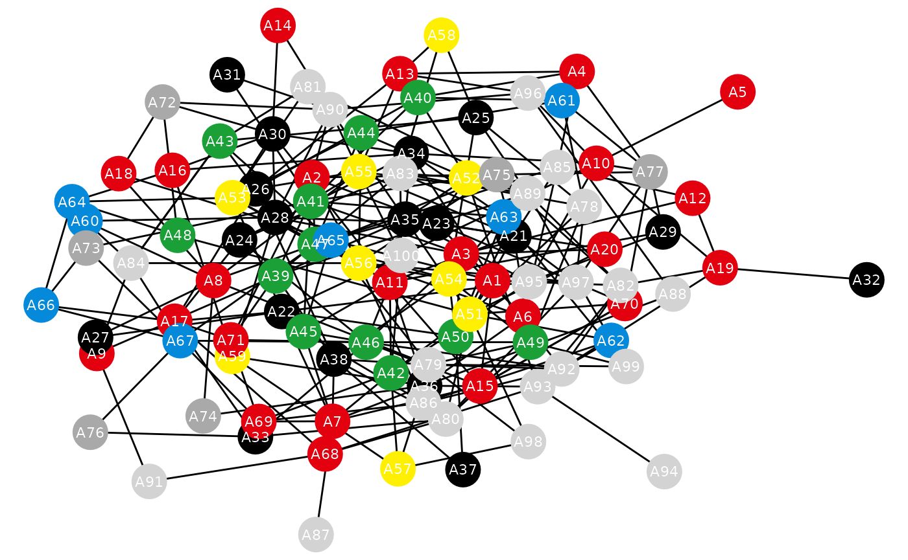

Read about Holley and Liggett’s Voter model in the original publication of 1975 or on Wikipedia.
library(tidyabm)
library(tibble)
library(dplyr)
#>
#> Attaching package: 'dplyr'
#> The following objects are masked from 'package:stats':
#>
#> filter, lag
#> The following objects are masked from 'package:base':
#>
#> intersect, setdiff, setequal, union
library(tidygraph)
#>
#> Attaching package: 'tidygraph'
#> The following object is masked from 'package:stats':
#>
#> filter
library(ggraph)
#> Loading required package: ggplot2
library(ggplot2)Here, we create an undirected network environment with 100 agents
where each agent feels connected to a (or no) party and each agent is
connected to 0-6 other agents. Central model configuration parameters
are combined here. Specifically, we use the results of the 2021
German Federal Election but also factor in non-voters. Later, each
agent will only change their mind given in a certain amount of times
(i.e., with a probability of p_change). It will then take
over randomly one of their neighbors’ (i.e., directly connected agents)
party preference but instead of just randomly drawing one of the
neighbors’ parties, the present party with most support among the
neighbors (i.e., the bandwagon) is
slightly over-preferred (by a factor of boost_bandwagon)
and so is the present party with least support among neighbors (i.e.,
the underdog,
boost_underdog). However, given the state of empirical
research on these two boosts, the bandwagon effect is more likely to
occur than the underdog effect.
n_agents_per_party_initial <- c('spd' = 20,
'union' = 18,
'greens' = 12,
'fdp' = 9,
'afd' = 8,
'left' = 4,
'others' = 6,
'none' = 23)
n_connections_min <- 0
n_connections_max <- 6
p_change <- .25
boost_bandwagon <- 1.3
boost_underdog <- 1.1This time, although we need a couple of different agents, we only create one agent blueprint first to then (next step) create the other agents automatically. This blueprint already does the main work, though. It connects initially to others, it checks whether it should adjust its party preference at any tick, and, if so, it adjusts its party preference.
agent_blueprint <- create_agent() %>%
set_characteristic(connected = FALSE) %>%
add_rule('initial connect',
connected == FALSE,
.consequence = function(me, abm) {
n_connections <- runif(1,
min = n_connections_min,
max = n_connections_max)
if (n_connections > 0) {
for (i in 1:n_connections) {
random_agent <- get_random_agent(abm, me)
me <- network_connect(me, random_agent)
}
}
me %>%
set_characteristic(connected = TRUE,
.overwrite = TRUE,
.suppress_warnings = TRUE) %>%
return()
}) %>%
add_variable(should_party_adjust = function(me, abm) {
return(all(me$connected == TRUE,
length(me$.outdegree) > 0,
runif(1) <= p_change))
}) %>%
add_rule('adjust party',
should_party_adjust == TRUE,
.consequence = function(me, abm) {
available_neighborhood_parties <-
network_get_neighbors(me, abm) %>%
dplyr::count(party) %>%
dplyr::arrange(dplyr::desc(n)) %>%
dplyr::mutate(weight = 1.0)
n_parties <- nrow(available_neighborhood_parties)
if (n_parties > 1) {
available_neighborhood_parties[[1, 'weight']] <-
boost_bandwagon
available_neighborhood_parties[[n_parties, 'weight']] <-
boost_underdog
}
new_party <- sample(available_neighborhood_parties$party,
size = 1,
prob = available_neighborhood_parties$weight)
me %>%
set_characteristic(party = new_party,
.overwrite = TRUE,
.suppress_warnings = TRUE) %>%
return()
})Here’s the actual model (i.e., the environment):
e <- create_network_environment(seed = 1835456,
is_directed = FALSE)
for (party_name in names(n_agents_per_party_initial)) {
e <- e %>%
add_agents(agent_blueprint %>%
set_characteristic(party = party_name),
n = n_agents_per_party_initial[[party_name]])
}
e <- e %>%
init()Just to make sure everything worked, we can check the agents and see if their distribution matches our initial distribution.
e %>%
convert_agents_to_tibble() %>%
count(party) %>%
arrange(desc(n))
#> # A tibble: 8 × 2
#> party n
#> <chr> <int>
#> 1 none 23
#> 2 spd 20
#> 3 union 18
#> 4 greens 12
#> 5 fdp 9
#> 6 afd 8
#> 7 others 6
#> 8 left 4Looking good, so we are ready to rumble. Let’s first do one iteration so that connections are established. After that, we can try and visualize this kind-of manually to also control coloring.
e <- e %>%
tick()
#> [1] "Tick 1 finished in 4.106 secs"
e %>%
convert_network_to_tidygraph() %>%
ggraph(layout = 'kk') +
geom_edge_link(show.legend = FALSE) +
geom_node_point(aes(color = party),
size = 9) +
geom_node_text(aes(label = name),
color = '#FFFFFF',
size = 3) +
scale_color_manual(values = c('spd' = '#E3000F',
'union' = '#000000',
'greens' = '#1AA037',
'fdp' = '#FFEF00',
'afd' = '#0489DB',
'left' = '#E3000F',
'others' = 'darkgrey',
'none' = 'lightgrey')) +
theme_void() +
theme(legend.position = 'none')
#> Warning: Using the `size` aesthetic in this geom was deprecated in ggplot2 3.4.0.
#> ℹ Please use `linewidth` in the `default_aes` field and elsewhere instead.
#> This warning is displayed once every 8 hours.
#> Call `lifecycle::last_lifecycle_warnings()` to see where this warning was
#> generated.
Now we can iterate. Since we do not have a stop criterion defined, we iterate over some ticks and look at the result. The result here can be our visualization but of course it can also be the distribution of votes in our environment. Let’s go 5 ticks for a start.
e <- e %>%
iterate(max_iterations = 5)
#> [1] "Tick 2 finished in 1.683 secs"
#> [1] "Tick 3 finished in 1.75 secs"
#> [1] "Tick 4 finished in 1.414 secs"
#> [1] "Tick 5 finished in 1.742 secs"
#> [1] "Tick 6 finished in 1.591 secs"
e %>%
convert_agents_to_tibble() %>%
count(party) %>%
arrange(desc(party))
#> # A tibble: 7 × 2
#> party n
#> <chr> <int>
#> 1 union 16
#> 2 spd 15
#> 3 others 12
#> 4 none 27
#> 5 greens 7
#> 6 fdp 8
#> 7 afd 15
e %>%
convert_network_to_tidygraph() %>%
ggraph(layout = 'kk') +
geom_edge_link(show.legend = FALSE) +
geom_node_point(aes(color = party),
size = 9) +
geom_node_text(aes(label = name),
color = '#FFFFFF',
size = 3) +
scale_color_manual(values = c('spd' = '#E3000F',
'union' = '#000000',
'greens' = '#1AA037',
'fdp' = '#FFEF00',
'afd' = '#0489DB',
'left' = '#E3000F',
'others' = 'darkgrey',
'none' = 'lightgrey')) +
theme_void() +
theme(legend.position = 'none')Something has certainly changed. It could be hard to digest, though. So for the next five ticks, we also print the change/delta to the initial/seminal starting values.
e <- e %>%
iterate(max_iterations = 5)
#> [1] "Tick 7 finished in 1.752 secs"
#> [1] "Tick 8 finished in 1.614 secs"
#> [1] "Tick 9 finished in 1.433 secs"
#> [1] "Tick 10 finished in 1.604 secs"
#> [1] "Tick 11 finished in 1.755 secs"
e %>%
convert_agents_to_tibble() %>%
count(party) %>%
arrange(desc(party)) %>%
left_join(tibble(party = names(n_agents_per_party_initial),
initial_vote = n_agents_per_party_initial),
by = 'party') %>%
mutate(delta = n - initial_vote)
#> # A tibble: 7 × 4
#> party n initial_vote delta
#> <chr> <int> <dbl> <dbl>
#> 1 union 20 18 2
#> 2 spd 17 20 -3
#> 3 others 13 6 7
#> 4 none 16 23 -7
#> 5 greens 17 12 5
#> 6 fdp 4 9 -5
#> 7 afd 13 8 5
e %>%
convert_network_to_tidygraph() %>%
ggraph(layout = 'kk') +
geom_edge_link(show.legend = FALSE) +
geom_node_point(aes(color = party),
size = 9) +
geom_node_text(aes(label = name),
color = '#FFFFFF',
size = 3) +
scale_color_manual(values = c('spd' = '#E3000F',
'union' = '#000000',
'greens' = '#1AA037',
'fdp' = '#FFEF00',
'afd' = '#0489DB',
'left' = '#E3000F',
'others' = 'darkgrey',
'none' = 'lightgrey')) +
theme_void() +
theme(legend.position = 'none')That’s much better. It looks as if the largest groups (parties/non-voters) seemingly lose their voters while others gain (some even significantly). Let’s do a couple more rounds.
e <- e %>%
iterate(max_iterations = 30)
#> [1] "Tick 12 finished in 1.235 secs"
#> [1] "Tick 13 finished in 1.598 secs"
#> [1] "Tick 14 finished in 1.323 secs"
#> [1] "Tick 15 finished in 1.283 secs"
#> [1] "Tick 16 finished in 1.467 secs"
#> [1] "Tick 17 finished in 1.122 secs"
#> [1] "Tick 18 finished in 1.433 secs"
#> [1] "Tick 19 finished in 1.655 secs"
#> [1] "Tick 20 finished in 1.477 secs"
#> [1] "Tick 21 finished in 1.48 secs"
#> [1] "Tick 22 finished in 1.974 secs"
#> [1] "Tick 23 finished in 1.883 secs"
#> [1] "Tick 24 finished in 1.707 secs"
#> [1] "Tick 25 finished in 1.501 secs"
#> [1] "Tick 26 finished in 1.767 secs"
#> [1] "Tick 27 finished in 1.751 secs"
#> [1] "Tick 28 finished in 1.426 secs"
#> [1] "Tick 29 finished in 1.74 secs"
#> [1] "Tick 30 finished in 1.335 secs"
#> [1] "Tick 31 finished in 1.473 secs"
#> [1] "Tick 32 finished in 1.712 secs"
#> [1] "Tick 33 finished in 1.863 secs"
#> [1] "Tick 34 finished in 1.858 secs"
#> [1] "Tick 35 finished in 1.611 secs"
#> [1] "Tick 36 finished in 1.751 secs"
#> [1] "Tick 37 finished in 1.392 secs"
#> [1] "Tick 38 finished in 1.565 secs"
#> [1] "Tick 39 finished in 1.603 secs"
#> [1] "Tick 40 finished in 1.424 secs"
#> [1] "Tick 41 finished in 1.799 secs"
e %>%
convert_agents_to_tibble() %>%
count(party) %>%
arrange(desc(party)) %>%
left_join(tibble(party = names(n_agents_per_party_initial),
initial_vote = n_agents_per_party_initial),
by = 'party') %>%
mutate(delta = n - initial_vote)
#> # A tibble: 5 × 4
#> party n initial_vote delta
#> <chr> <int> <dbl> <dbl>
#> 1 union 18 18 0
#> 2 none 36 23 13
#> 3 greens 24 12 12
#> 4 fdp 5 9 -4
#> 5 afd 17 8 9
e %>%
convert_network_to_tidygraph() %>%
ggraph(layout = 'kk') +
geom_edge_link(show.legend = FALSE) +
geom_node_point(aes(color = party),
size = 9) +
geom_node_text(aes(label = name),
color = '#FFFFFF',
size = 3) +
scale_color_manual(values = c('spd' = '#E3000F',
'union' = '#000000',
'greens' = '#1AA037',
'fdp' = '#FFEF00',
'afd' = '#0489DB',
'left' = '#E3000F',
'others' = 'darkgrey',
'none' = 'lightgrey')) +
theme_void() +
theme(legend.position = 'none')Now that’s a stunner. But I’ll leave the interpretation to you. Of course, as always, we can compile relevant data for any publication we’re preparing through the ODD protocol:
e %>%
odd()
#> # A tibble: 7 × 4
#> `ODD category` Element Content `tidyABM information`
#> <chr> <chr> <chr> <chr>
#> 1 Overview Purpose and patterns "Brief… NA
#> 2 Overview Entities, state variables, and … "List … ABM network environm…
#> 3 Overview Process overview and scheduling "Provi… environment rules: -…
#> 4 Design concepts Design concepts "This … Model has not yet fi…
#> 5 Details Initialization "Speci… See the list of agen…
#> 6 Details Input data "Repor… NA
#> 7 Details Submodels "Repea… NA